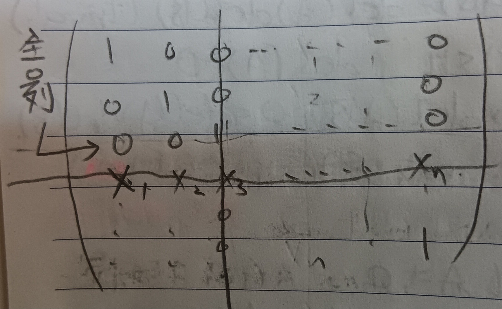

這份筆記是關於克拉瑪定則的證明與其在古典伴隨矩陣上的應用。
這裡的行與列依循的是台灣的翻譯習慣，即行對應到英文的Column，而列對應到英文的Row。
克拉瑪定則
定理 1：克拉瑪定則 (Cramer's Rule)
給定線性方程組\(Ax=b\)，其中\(\det(A)\neq 0\)。令 \[ x=\left( \begin{array}{c} x_1\\ x_2\\ \vdots\\ x_n \end{array} \right) \] 為此方程的解，且令\(M_k\)為把\(A\)的第\(k\)行替代為\(b\)的矩陣，則 \[ x_k=\frac{\det(M_k)}{\det(A)} \]
證明：由\(\det A\neq 0\)知\(A\)是可逆的，故\(Ax=b\)有唯一解，該解為 \[ x=A^{-1}b \] 令\(A=(a_1,a_2,\cdots,a_n)\)，其中\(a_1,a_2,\cdots,a_n\)為行向量，並令\(X_k\)為把\(I_n\)的第\(k\)行替代為\(x\)的矩陣。則 \[ AX_k=(a_1,a_2,\cdots,\underbrace{b}_{\mbox{第}k\mbox{行}},\cdots,a_n)=M_k \] 而由這裡的定理10有 \[ \det(X_k)=\det(X_k^t)=\sum_{j=1}^n(-1)^{k+j}x_j\det(\widetilde{(X_k^t)_{kj}}) \] 然而除了\(j=k\)外，我們知道\(\det(\widetilde{(X_k^t)_{kj}})=0\)，這是因為\(\widetilde{(X_k^t)_{kj}}\)有一列全是\(0\)(見下圖1)。
故 \[ \det(X_k)=(-1)^{k+k}x_k\det(I_{n-1})=x_k \] 而\(\det(A)\det(X_k)=\det(M_k)\)，故 \[ x_k=\frac{\det(M_k)}{\det(A)} \] QED
古典伴隨矩陣
定義 2：古典伴隨矩陣 (Classical Adjoint Matrix)
給定矩陣\(A\)。我們稱\(C\)是\(A\)的古典伴隨矩陣，若給定 \[ c_{jk}=(-1)^{j+k}\det(\widetilde{A_{jk}}) \] 有\(C=(c_{ij})^t\)(即輔因子矩陣的轉置)。
註記 3
令\(B\)是把\(A\)的第\(k\)行換成\(e_j\)的矩陣，並令\(c_{jk}\)為\(A\)第\(j\)列第\(k\)行的的輔因子，則 \[ \det(B)=c_{jk} \]
證明：我們有 \[ \begin{aligned} \det(B)&=\det(B^t)\\ &=(-1)^{j+k}\det(\widetilde{A_{kj}^t})\mbox{ (☆)}\\ &=(-1)^{j+k}\det(\widetilde{A_{jk}})\\ &=c_{jk} \end{aligned} \] 其中(☆)處是這裡的引理5。QED
註記 4
令\(\det A\neq 0\)，則 \[ A\left( \begin{array}{c} c_{j1}\\ c_{j2}\\ \vdots\\ c_{jn} \end{array} \right)=\det(A)e_j \]
證明：考慮方程組\(Ax=e_j\)，令此方程的解為 \[ x=\left( \begin{array}{c} x_1\\ x_2\\ \vdots\\ x_n \end{array} \right) \] 由克拉瑪定則知 \[ x_1=\frac{\det(e_j,a_2,\cdots,a_n)}{\det(A)} \] 而由註記3知 \[ x_1=\frac{\det(e_j,a_2,\cdots,a_n)}{\det(A)}=\frac{c_{j1}}{\det(A)} \] 同理，有 \[ x_k=\frac{c_{jk}}{\det(A)} \] 故有 \[ A\left( \begin{array}{c} c_{j1}\\ c_{j2}\\ \vdots\\ c_{jn} \end{array} \right)=\det(A)e_j \] QED
推論 4-1
由註記4易得 \[ AC=\det(A)I \] 其中\(C\)為\(A\)的古典轉置矩陣。
定理 4-1-1
我們有 \[ A^{-1}=\frac{1}{\det(A)}C \]
註記 4-1-2
令\(C\)為\(A\)的古典轉置矩陣，則 \[ \det(C)=(\det(A))^{n-1} \]
證明：由推論4-1有 \[ AC=\left( \begin{array}{cccc} \det(A) & 0 & \cdots & 0\\ 0 & \det(A) & \cdots & 0\\ \vdots & \vdots & \ddots & \vdots\\ 0 & 0 & \cdots & \det(A) \end{array} \right) \] 故 \[ \det(A)\det(C)=(\det(A))^n \] 即 \[ \det(C)=(\det(A))^{n-1} \] QED